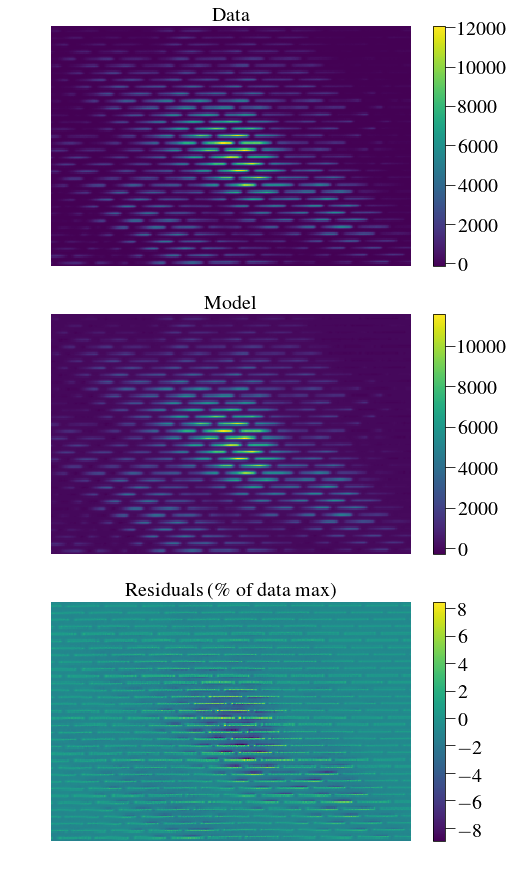
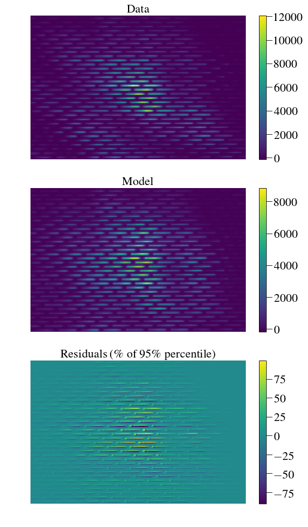
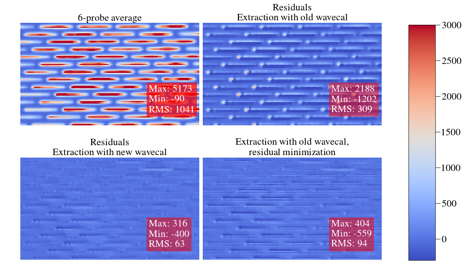

This notebook is an attempt to prove a new calibration technique for the IFS¶
It uses DM probes to create an artificial “broadband flatfield” over the region of interest.
In [1]:
%pylab inline --no-import-all
plt.rc('font', family='serif', serif='Times',size=20)
plt.rc('text', usetex=True)
plt.rc('xtick', labelsize=20)
plt.rc('xtick.major', size=10)
plt.rc('ytick.major', size=10)
plt.rc('ytick', labelsize=20)
plt.rc('axes', labelsize=20)
plt.rc('figure',titlesize=20)
plt.rc('image',origin='lower',interpolation='nearest')
cmap='viridis'
import os
from astropy.io import fits
from crispy.tools.image import Image
from crispy.tools.initLogger import getLogger
log = getLogger('crispy')
Populating the interactive namespace from numpy and matplotlib
First, we need to build a wavelength calibration for least squares¶
In [3]:
os.chdir('/Users/mrizzo/IFS/crispy/crispy/PISCES_caltest/')
from PISCESparams import Params
par = Params()
par.hdr
Out[3]:
SIMPLE = T / conforms to FITS standard
BITPIX = 8 / array data type
NAXIS = 0 / number of array dimensions
EXTEND = T
COMMENT
COMMENT ************************************************************
COMMENT ********************** General parameters ******************
COMMENT ************************************************************
COMMENT
NLENS = 108 / # lenslets across array
PITCH = 0.000174 / Lenslet pitch (meters)
INTERLAC= 2 / Interlacing
PHILENS = 26.56505117707799 / Rotation angle of the lenslets (deg)
PIXSIZE = 1.3E-05 / Pixel size (meters)
LENSAMP = 0.5 / Lenslet sampling (lam/D)
LSAMPWAV= 600.0 / Lenslet sampling wavelength (nm)
FWHM = 2 / FHWM of PSFLet at detector (pixels)
FWHMLAM = 660.0 / Wavelength at which FWHM is defined (nm)
NPIX = 1024 / Number of detector pixels
DISPDIST= F / Use PISCES distortion/dispersion?
Re-build wavecal¶
In [138]:
from crispy.tools.wavecal import buildcalibrations
par.gaussian_hires=False # since par.gaussian_hires is False, it will attempt to make high-resolution PSFLets
par.lamlist = np.arange(600.,725.,10)
par.filelist = [par.wavecalDir+'det'+str(wav)+'.fits' for wav in par.lamlist]
buildcalibrations(par,
inspect=False,
genwavelengthsol=True, # Compute wavelength at the center of all pixels
makehiresPSFlets=True, # this requires very high SNR on the monochromatic frames
makePolychrome=True, # This is needed to use least squares extraction
makePSFWidths=True, # Fit PSF widths from high-res PSFLet models
makehiresPolychrome=True,
upsample=3, # upsampling factor of the high-resolution PSFLets
nsubarr=4, # the detector is divided into nsubarr^2 regions for PSFLet averaging
apodize=False, # to match PSFlet spot locations, only use the inner circular part of the
#detector, hence discarding the corners of the detector where lenslets are
#distorted
)
crispy - INFO - Building calibration files, placing results in ..//ReferenceFiles/Calibra_170510/
crispy - INFO - Read data from HDU 1 of ..//ReferenceFiles/Calibra_170510/det600.0.fits
crispy - INFO - Read data from HDU 1 of ..//ReferenceFiles/Calibra_170510/det600.0.fits
crispy - INFO - Initializing PSFlet location transformation coefficients
crispy - INFO - Performing initial optimization of PSFlet location transformation coefficients for frame ..//ReferenceFiles/Calibra_170510/det600.0.fits
crispy - INFO - Performing final optimization of PSFlet location transformation coefficients for frame ..//ReferenceFiles/Calibra_170510/det600.0.fits
crispy - INFO - Read data from HDU 1 of ..//ReferenceFiles/Calibra_170510/det610.0.fits
crispy - INFO - Initializing transformation coefficients with previous values
crispy - INFO - Performing final optimization of PSFlet location transformation coefficients for frame ..//ReferenceFiles/Calibra_170510/det610.0.fits
crispy - INFO - Read data from HDU 1 of ..//ReferenceFiles/Calibra_170510/det620.0.fits
crispy - INFO - Initializing transformation coefficients with previous values
crispy - INFO - Performing final optimization of PSFlet location transformation coefficients for frame ..//ReferenceFiles/Calibra_170510/det620.0.fits
crispy - INFO - Read data from HDU 1 of ..//ReferenceFiles/Calibra_170510/det630.0.fits
crispy - INFO - Initializing transformation coefficients with previous values
crispy - INFO - Performing final optimization of PSFlet location transformation coefficients for frame ..//ReferenceFiles/Calibra_170510/det630.0.fits
crispy - INFO - Read data from HDU 1 of ..//ReferenceFiles/Calibra_170510/det640.0.fits
crispy - INFO - Initializing transformation coefficients with previous values
crispy - INFO - Performing final optimization of PSFlet location transformation coefficients for frame ..//ReferenceFiles/Calibra_170510/det640.0.fits
crispy - INFO - Read data from HDU 1 of ..//ReferenceFiles/Calibra_170510/det650.0.fits
crispy - INFO - Initializing transformation coefficients with previous values
crispy - INFO - Performing final optimization of PSFlet location transformation coefficients for frame ..//ReferenceFiles/Calibra_170510/det650.0.fits
crispy - INFO - Read data from HDU 1 of ..//ReferenceFiles/Calibra_170510/det660.0.fits
crispy - INFO - Initializing transformation coefficients with previous values
crispy - INFO - Performing final optimization of PSFlet location transformation coefficients for frame ..//ReferenceFiles/Calibra_170510/det660.0.fits
crispy - INFO - Read data from HDU 1 of ..//ReferenceFiles/Calibra_170510/det670.0.fits
crispy - INFO - Initializing transformation coefficients with previous values
crispy - INFO - Performing final optimization of PSFlet location transformation coefficients for frame ..//ReferenceFiles/Calibra_170510/det670.0.fits
crispy - INFO - Read data from HDU 1 of ..//ReferenceFiles/Calibra_170510/det680.0.fits
crispy - INFO - Initializing transformation coefficients with previous values
crispy - INFO - Performing final optimization of PSFlet location transformation coefficients for frame ..//ReferenceFiles/Calibra_170510/det680.0.fits
crispy - INFO - Read data from HDU 1 of ..//ReferenceFiles/Calibra_170510/det690.0.fits
crispy - INFO - Initializing transformation coefficients with previous values
crispy - INFO - Performing final optimization of PSFlet location transformation coefficients for frame ..//ReferenceFiles/Calibra_170510/det690.0.fits
crispy - INFO - Read data from HDU 1 of ..//ReferenceFiles/Calibra_170510/det700.0.fits
crispy - INFO - Initializing transformation coefficients with previous values
crispy - INFO - Performing final optimization of PSFlet location transformation coefficients for frame ..//ReferenceFiles/Calibra_170510/det700.0.fits
crispy - INFO - Read data from HDU 1 of ..//ReferenceFiles/Calibra_170510/det710.0.fits
crispy - INFO - Initializing transformation coefficients with previous values
crispy - INFO - Performing final optimization of PSFlet location transformation coefficients for frame ..//ReferenceFiles/Calibra_170510/det710.0.fits
crispy - INFO - Read data from HDU 1 of ..//ReferenceFiles/Calibra_170510/det720.0.fits
crispy - INFO - Initializing transformation coefficients with previous values
crispy - INFO - Performing final optimization of PSFlet location transformation coefficients for frame ..//ReferenceFiles/Calibra_170510/det720.0.fits
crispy - INFO - Saving wavelength solution to ..//ReferenceFiles/Calibra_170510/lamsol.dat
crispy - INFO - Computing wavelength values at pixel centers
crispy - INFO - Making high-resolution PSFLet models
crispy - INFO - Starting parallel computation
crispy - INFO - Computing PSFLet widths...
crispy - INFO - Reduced cube will have 16 wavelength bins
crispy - INFO - Making polychrome cube
crispy - INFO - Saving polychrome cube
crispy - INFO - Saving wavelength calibration cube
crispy - INFO - Making high-resolution polychrome cube (can use lots of memory)
crispy - INFO - Reduced cube will have 16 wavelength bins
crispy - INFO - Saving hi-res polychrome cube
crispy - INFO - Total time elapsed: 504 s
In [7]:
psflets = Image(par.wavecalDir+"/hires_psflets_lam600.fits").data
fig, axarr = plt.subplots(4,4,figsize=(12,12))
for i in range(psflets.shape[0]):
for j in range(psflets.shape[1]):
axarr[i,j].imshow(psflets[i,j],vmin=0.0,cmap=cmap)
axarr[i,j].axis('off')
plt.subplots_adjust(wspace=0.0,hspace=0.05)
plt.savefig(par.wavecalDir+"psflets.png")
plt.savefig("/Users/mrizzo/Downloads/Psflets.png")
plt.show()
crispy - INFO - Read data from HDU 0 of ..//ReferenceFiles/Calibra_170510//hires_psflets_lam600.fits

Test that extraction is good¶
In [8]:
from crispy.IFS import reduceIFSMap
In [111]:
# example file:
fname = '/Users/mrizzo/IFS/PISCES/Maxime_data/Maxime_IFS_data/it03750_PISCES1_170517_051651_257881.fits'
img = Image(fname)
img.data-=np.mean(img.data)
crispy - INFO - Read data from HDU 0 of /Users/mrizzo/IFS/PISCES/Maxime_data/Maxime_IFS_data/it03750_PISCES1_170517_051651_257881.fits
In [47]:
cube = reduceIFSMap(par,img.data,method='lstsq',name='test_PISCES_cal',smoothbad=False,fitbkgnd=False)
plt.figure(figsize=(10,15))
data=img.data
cmap='viridis'
ftsize=20
model = Image(par.exportDir+'/test_PISCES_cal_red_lstsq_model.fits').data
resid = Image(par.exportDir+'/test_PISCES_cal_red_lstsq_resid.fits').data
x=np.arange(430,630)
y=np.arange(160,460)
x,y=np.meshgrid(x,y)
plt.subplot(311)
plt.imshow(data[x,y].T,cmap=cmap)
plt.axis('off')
plt.colorbar(fraction=0.046, pad=0.04)
plt.title('Data',fontsize=ftsize)
plt.subplot(312)
plt.imshow(model[x,y].T,cmap=cmap)
plt.axis('off')
plt.colorbar(fraction=0.046, pad=0.04)
plt.title('Model',fontsize=ftsize)
plt.subplot(313)
plt.imshow(100*resid[x,y].T/np.amax(data[x,y].T),cmap=cmap)
plt.axis('off')
plt.colorbar(fraction=0.046, pad=0.04)
plt.title('Residuals (\% of data max)',fontsize=ftsize)
log.info("Rms residuals over subregion are: {:}%".format(np.std(100*resid[x,y].T/np.amax(data[x,y].T))))
log.info("Rms residuals over total map are: {:}%".format(np.nanstd(100*resid.T/np.amax(data.T))))
crispy - INFO - Read data from HDU 1 of ..//SimResults/test_PISCES_cal_red_lstsq_model.fits
crispy - INFO - Read data from HDU 1 of ..//SimResults/test_PISCES_cal_red_lstsq_resid.fits
crispy - INFO - Rms residuals over subregion are: 1.2200152874%
crispy - INFO - Rms residuals over total map are: 0.656857192516%

Average probes¶
In [4]:
import glob
probeflist = glob.glob('/Users/mrizzo/IFS/PISCES/Maxime_data/Maxime_IFS_data/it03750_PISCES*')
probeflist = [val for val in probeflist if 'dark' not in val]
probeflist = probeflist[1:]
log.info(probeflist)
crispy - INFO - ['/Users/mrizzo/IFS/PISCES/Maxime_data/Maxime_IFS_data/it03750_PISCES1_170517_051651_257881.fits', '/Users/mrizzo/IFS/PISCES/Maxime_data/Maxime_IFS_data/it03750_PISCES2_170517_051717_292764.fits', '/Users/mrizzo/IFS/PISCES/Maxime_data/Maxime_IFS_data/it03750_PISCES3_170517_051741_801423.fits', '/Users/mrizzo/IFS/PISCES/Maxime_data/Maxime_IFS_data/it03750_PISCES4_170517_051805_768634.fits', '/Users/mrizzo/IFS/PISCES/Maxime_data/Maxime_IFS_data/it03750_PISCES5_170517_051830_353145.fits', '/Users/mrizzo/IFS/PISCES/Maxime_data/Maxime_IFS_data/it03750_PISCES6_170517_051855_213515.fits']
In [5]:
average = np.zeros_like(Image(probeflist[0]).data)
for probe in probeflist:
average += Image(probe).data
average/=len(probeflist)
average -= np.mean(average)
Image(data=average).write(par.exportDir+'/average_probes.fits',clobber=True)
crispy - INFO - Read data from HDU 0 of /Users/mrizzo/IFS/PISCES/Maxime_data/Maxime_IFS_data/it03750_PISCES1_170517_051651_257881.fits
crispy - INFO - Read data from HDU 0 of /Users/mrizzo/IFS/PISCES/Maxime_data/Maxime_IFS_data/it03750_PISCES1_170517_051651_257881.fits
crispy - INFO - Read data from HDU 0 of /Users/mrizzo/IFS/PISCES/Maxime_data/Maxime_IFS_data/it03750_PISCES2_170517_051717_292764.fits
crispy - INFO - Read data from HDU 0 of /Users/mrizzo/IFS/PISCES/Maxime_data/Maxime_IFS_data/it03750_PISCES3_170517_051741_801423.fits
crispy - INFO - Read data from HDU 0 of /Users/mrizzo/IFS/PISCES/Maxime_data/Maxime_IFS_data/it03750_PISCES4_170517_051805_768634.fits
crispy - INFO - Read data from HDU 0 of /Users/mrizzo/IFS/PISCES/Maxime_data/Maxime_IFS_data/it03750_PISCES5_170517_051830_353145.fits
crispy - INFO - Read data from HDU 0 of /Users/mrizzo/IFS/PISCES/Maxime_data/Maxime_IFS_data/it03750_PISCES6_170517_051855_213515.fits
crispy - INFO - Writing data to ..//SimResults/average_probes.fits
WARNING: AstropyDeprecationWarning: "clobber" was deprecated in version 2.0 and will be removed in a future version. Use argument "overwrite" instead. [astropy.utils.decorators]
In [139]:
cube = reduceIFSMap(par,average,method='lstsq',name='test_PISCES_sum_probes_VARIA',smoothbad=False,fitbkgnd=True)
plt.figure(figsize=(10,15))
data=average
cmap='viridis'
ftsize=20
model = Image(par.exportDir+'/test_PISCES_sum_probes_VARIA_red_lstsq_model.fits').data
resid = Image(par.exportDir+'/test_PISCES_sum_probes_VARIA_red_lstsq_resid.fits').data
x=np.arange(430,630)
y=np.arange(160,460)
x,y=np.meshgrid(x,y)
plt.subplot(311)
plt.imshow(data[x,y].T,cmap=cmap)
plt.axis('off')
plt.colorbar(fraction=0.046, pad=0.04)
plt.title('Data',fontsize=ftsize)
plt.subplot(312)
plt.imshow(model[x,y].T,cmap=cmap)
plt.axis('off')
plt.colorbar(fraction=0.046, pad=0.04)
plt.title('Model',fontsize=ftsize)
plt.subplot(313)
plt.imshow(100*resid[x,y].T/np.percentile(data[x,y].T,95),cmap=cmap)
plt.axis('off')
plt.colorbar(fraction=0.046, pad=0.04)
plt.title('Residuals (\% of 95\% percentile)',fontsize=ftsize)
log.info("Rms residuals over subregion are: {:.2f}%".format(np.std(100*resid[x,y].T/np.percentile(data[x,y].T,95))))
log.info("Rms residuals over total map are: {:.2f}%".format(np.nanstd(100*resid.T/np.percentile(data[x,y].T,95))))
crispy - INFO - Reduced cube will have 16 wavelength bins
crispy - INFO - Writing data to ..//SimResults/test_PISCES_sum_probes_VARIA_red_lstsq_resid.fits
crispy - INFO - Writing data to ..//SimResults/test_PISCES_sum_probes_VARIA_red_lstsq_model.fits
crispy - INFO - Elapsed time: 6.072988s
crispy - INFO - Read data from HDU 1 of ..//SimResults/test_PISCES_sum_probes_VARIA_red_lstsq_model.fits
crispy - INFO - Read data from HDU 1 of ..//SimResults/test_PISCES_sum_probes_VARIA_red_lstsq_resid.fits
crispy - INFO - Rms residuals over subregion are: 2.82%
crispy - INFO - Rms residuals over total map are: 1.00%

In [50]:
print(np.amax(model[x,y].T))
print(np.percentile(model[x,y].T,99))
9312.79
4958.88248047
Scratch work to compare rescaling functions¶
In [57]:
from crispy.tools.detutils import frebin
import skimage.transform
In [64]:
hirespoly = Image(par.wavecalDir+'hiresPolychromeR70stack.fits').data
skimage_hirespoly = skimage.transform.rescale(hirespoly,
(1./3., 1./3.), order=3,
cval=0) / (1./3.)**2
frebin_hirespoly = frebin(hirespoly,(hirespoly.shape[1]/3,hirespoly.shape[0]/3))
Image(data=skimage_hirespoly).write(par.exportDir+'/skimage_hirespoly.fits',clobber=True)
Image(data=frebin_hirespoly).write(par.exportDir+'/frebin_hirespoly.fits',clobber=True)
crispy - INFO - Read data from HDU 0 of ..//ReferenceFiles/Calibra_170510/hiresPolychromeR70stack.fits
crispy - INFO - Writing data to ..//SimResults/skimage_hirespoly.fits
crispy - INFO - Writing data to ..//SimResults/frebin_hirespoly.fits
Attempt 1: Shift polychrome by interpolation (fastest)¶
Define the function to be minimized¶
In [97]:
from scipy import ndimage
from crispy.tools.reduction import _tag_psflets,fit_cutout,get_cutout,_add_row
def score(dxdy,image,poly,polychromekey,fitbkgnd=False,mask=None,returnall=False):
# 1. Interpolate-shift the poly
newpoly = np.zeros_like(poly)
for i in range(newpoly.shape[0]):
newpoly[i] = ndimage.interpolation.shift(poly[i],dxdy,prefilter=True,cval=0,order=3)
xindx = polychromekey[1].data
yindx = polychromekey[2].data
good = polychromekey[3].data
if fitbkgnd:
n_add = 1
newpoly = _add_row(newpoly, n=n_add, dtype=np.float64)
newpoly[-n_add:] = 0
newpoly[-1, 4:-4, 4:-4] = 1
xindx = _add_row(xindx, n=n_add)
yindx = _add_row(yindx, n=n_add)
good = _add_row(good, n=n_add)
else:
n_add=0
cube = np.zeros((newpoly.shape[0],par.nlens,par.nlens))
ydim,xdim = image.shape
resid = image.copy()
# 2. Chi-squared extraction
for i in range(par.nlens):
for j in range(par.nlens):
if np.prod(good[:,i,j],axis=0):
subim, psflet_subarr, [y0, y1, x0, x1] = get_cutout(Image(data=image),xindx[:,i,j],yindx[:,i,j],newpoly,dy=3)
cube[:,j,i] = fit_cutout(subim.copy(), psflet_subarr.copy(), mode='lstsq')
# 3. Construction of residuals
for i in range(len(newpoly)):
_x = xindx[i]
_y = yindx[i]
good = (_x > 3)*(_x < xdim-3)*(_y > 3)*(_y < ydim-3)
psflet_indx = _tag_psflets(image.shape, _x, _y, good,dx=10,dy=10)
coefs_flat = np.reshape(cube[i].transpose(), -1)
resid -= newpoly[i]*coefs_flat[psflet_indx]
print('dxdy,std(resid): {:},{:}'.format(dxdy,np.std(resid)))
if returnall:
if fitbkgnd:
cube = cube[:-1]
return resid,cube
else:
return np.std(resid)
In [98]:
resid = score([0,0],average,polychrome,polychromekey,fitbkgnd=True)
print resid
dxdy,std(resid): [0, 0],34.6828117371
34.6828
Minimize the residuals¶
In [99]:
from scipy.optimize import minimize
polychrome = fits.open(par.wavecalDir+'polychromeR70.fits')[0].data
polychromekey = fits.open(par.wavecalDir+'polychromekeyR70.fits')
In [101]:
res = minimize(score,[0,0],args=(average,polychrome,polychromekey,True),method='SLSQP',
bounds = [(-0.5,0.5),(-0.5,0.5)])
dxdy,std(resid): [ 0. 0.],34.6828117371
dxdy,std(resid): [ 0. 0.],34.6828117371
dxdy,std(resid): [ 1.49011612e-08 0.00000000e+00],34.6818237305
dxdy,std(resid): [ 0.00000000e+00 1.49011612e-08],34.6816444397
dxdy,std(resid): [ 0.42159712 0.407369 ],145.188461304
dxdy,std(resid): [ 0.21041016 0.20330921],83.683303833
dxdy,std(resid): [ 0.10503282 0.10148816],54.983795166
dxdy,std(resid): [ 0.05244502 0.0506751 ],42.939163208
dxdy,std(resid): [ 0.02619347 0.02530949],38.1582145691
dxdy,std(resid): [ 0.01308451 0.01264293],36.2295837402
dxdy,std(resid): [ 0.00653681 0.00631621],35.404083252
dxdy,std(resid): [ 0.00326587 0.00315565],35.0290870667
dxdy,std(resid): [ 0.00163172 0.00157665],34.8514480591
dxdy,std(resid): [ 0.00081526 0.00078775],34.7651596069
dxdy,std(resid): [ 0.00040734 0.0003936 ],34.7226715088
---------------------------------------------------------------------------
KeyboardInterrupt Traceback (most recent call last)
<ipython-input-101-2eb11f921a86> in <module>()
1 res = minimize(score,[0,0],args=(average,polychrome,polychromekey,True),method='SLSQP',
----> 2 bounds = [(-0.5,0.5),(-0.5,0.5)])
/Users/mrizzo/anaconda/lib/python2.7/site-packages/scipy/optimize/_minimize.pyc in minimize(fun, x0, args, method, jac, hess, hessp, bounds, constraints, tol, callback, options)
456 elif meth == 'slsqp':
457 return _minimize_slsqp(fun, x0, args, jac, bounds,
--> 458 constraints, callback=callback, **options)
459 elif meth == 'dogleg':
460 return _minimize_dogleg(fun, x0, args, jac, hess,
/Users/mrizzo/anaconda/lib/python2.7/site-packages/scipy/optimize/slsqp.pyc in _minimize_slsqp(func, x0, args, jac, bounds, constraints, maxiter, ftol, iprint, disp, eps, callback, **unknown_options)
388 # Compute the derivatives of the objective function
389 # For some reason SLSQP wants g dimensioned to n+1
--> 390 g = append(fprime(x),0.0)
391
392 # Compute the normals of the constraints
/Users/mrizzo/anaconda/lib/python2.7/site-packages/scipy/optimize/optimize.pyc in function_wrapper(*wrapper_args)
290 def function_wrapper(*wrapper_args):
291 ncalls[0] += 1
--> 292 return function(*(wrapper_args + args))
293
294 return ncalls, function_wrapper
/Users/mrizzo/anaconda/lib/python2.7/site-packages/scipy/optimize/slsqp.pyc in approx_jacobian(x, func, epsilon, *args)
56 """
57 x0 = asfarray(x)
---> 58 f0 = atleast_1d(func(*((x0,)+args)))
59 jac = zeros([len(x0),len(f0)])
60 dx = zeros(len(x0))
/Users/mrizzo/anaconda/lib/python2.7/site-packages/scipy/optimize/optimize.pyc in function_wrapper(*wrapper_args)
290 def function_wrapper(*wrapper_args):
291 ncalls[0] += 1
--> 292 return function(*(wrapper_args + args))
293
294 return ncalls, function_wrapper
<ipython-input-97-7773c5c93369> in score(dxdy, image, poly, polychromekey, fitbkgnd, returnall)
30 if np.prod(good[:,i,j],axis=0):
31 subim, psflet_subarr, [y0, y1, x0, x1] = get_cutout(Image(data=image),xindx[:,i,j],yindx[:,i,j],newpoly,dy=3)
---> 32 cube[:,j,i] = fit_cutout(subim.copy(), psflet_subarr.copy(), mode='lstsq')
33 # 3. Construction of residuals
34 for i in range(len(newpoly)):
/Users/mrizzo/anaconda/lib/python2.7/site-packages/crispy-0.3-py2.7.egg/crispy/tools/reduction.pyc in fit_cutout(subim, psflets, mode)
466 subim_flat = np.reshape(subim, -1)
467 psflets_flat = np.reshape(psflets, (psflets.shape[0], -1))
--> 468 coef = np.linalg.lstsq(psflets_flat.T, subim_flat)[0]
469 # elif mode == 'ext':
470 # coef = np.zeros(psflets.shape[0])
/Users/mrizzo/anaconda/lib/python2.7/site-packages/numpy/linalg/linalg.pyc in lstsq(a, b, rcond)
1955 work = zeros((lwork,), t)
1956 results = lapack_routine(m, n, n_rhs, a, m, bstar, ldb, s, rcond,
-> 1957 0, work, lwork, iwork, 0)
1958 if results['info'] > 0:
1959 raise LinAlgError('SVD did not converge in Linear Least Squares')
KeyboardInterrupt:
Grid search¶
In [ ]:
npixmin = -0.5
npixmax = 0.5
nx = 10
ny = 10
grid = np.zeros((ny,nx))
yoffsets,xoffsets = np.meshgrid(np.linspace(npixmin,npixmax,ny),np.linspace(npixmin,npixmax,nx))
for ox in range(nx):
log.info('Iteration %d out of %d' % (ox+1,nx))
for oy in range(ny):
grid[ox,oy] = score([yoffsets[ox,oy],xoffsets[ox,oy]],average,polychrome,polychromekey,fitbkgnd=True)
In [106]:
coords = np.unravel_index(grid.argmin(), grid.shape)
log.info('Fitted offsets: %.2f, %.2f' % (yoffsets.T[coords],xoffsets.T[coords]))
plt.figure(figsize=(10,10))
plt.imshow(-grid)
plt.colorbar(fraction=0.046, pad=0.04)
plt.scatter([coords[1]],[coords[0]])
plt.annotate('%.2f, %.2f' % (yoffsets[coords],xoffsets[coords]),xy=coords[::-1],ha='left',va='bottom')
plt.title('Heatmap')
crispy - INFO - Fitted offsets: -0.50, -0.06
Out[106]:
<matplotlib.text.Text at 0x10e9b6150>

In [105]:
resid,cube = score([yoffsets[coords],xoffsets[coords]],average,polychrome,polychromekey,fitbkgnd=True,returnall=True)
Image(data=resid).write(par.exportDir+'/shifted_resid.fits')
Image(data=cube).write(par.exportDir+'/shifted_cube.fits')
dxdy,std(resid): [-0.05555555555555558, -0.5],32.0890960693
crispy - INFO - Writing data to ..//SimResults/shifted_resid.fits
crispy - INFO - Writing data to ..//SimResults/shifted_cube.fits
In [84]:
print np.std(resid)
74.1139
Assume a different wavecal¶
In [140]:
par.wavecalDir=par.prefix+'/Calibra_170425/'
cube = reduceIFSMap(par,average,method='lstsq',name='test_PISCES_sum_probes_VARIA_old_wavecal',smoothbad=False,fitbkgnd=True)
plt.figure(figsize=(10,15))
data=img.data
cmap='viridis'
ftsize=20
model = Image(par.exportDir+'/test_PISCES_sum_probes_VARIA_old_wavecal_red_lstsq_model.fits').data
resid = Image(par.exportDir+'/test_PISCES_sum_probes_VARIA_old_wavecal_red_lstsq_resid.fits').data
x=np.arange(430,630)
y=np.arange(160,460)
x,y=np.meshgrid(x,y)
plt.subplot(311)
plt.imshow(data[x,y].T,cmap=cmap)
plt.axis('off')
plt.colorbar(fraction=0.046, pad=0.04)
plt.title('Data',fontsize=ftsize)
plt.subplot(312)
plt.imshow(model[x,y].T,cmap=cmap)
plt.axis('off')
plt.colorbar(fraction=0.046, pad=0.04)
plt.title('Model',fontsize=ftsize)
plt.subplot(313)
plt.imshow(100*resid[x,y].T/np.percentile(data[x,y].T,95),cmap=cmap)
plt.axis('off')
plt.colorbar(fraction=0.046, pad=0.04)
plt.title('Residuals (\% of 95\% percentile)',fontsize=ftsize)
log.info("Rms residuals over subregion are: {:.2f}%".format(np.std(100*resid[x,y].T/np.percentile(data[x,y].T,95))))
log.info("Rms residuals over total map are: {:.2f}%".format(np.nanstd(100*resid.T/np.percentile(data[x,y].T,95))))
crispy - INFO - Reduced cube will have 16 wavelength bins
crispy - INFO - Writing data to ..//SimResults/test_PISCES_sum_probes_VARIA_old_wavecal_red_lstsq_resid.fits
crispy - INFO - Writing data to ..//SimResults/test_PISCES_sum_probes_VARIA_old_wavecal_red_lstsq_model.fits
crispy - INFO - Elapsed time: 4.748333s
crispy - INFO - Read data from HDU 1 of ..//SimResults/test_PISCES_sum_probes_VARIA_old_wavecal_red_lstsq_model.fits
crispy - INFO - Read data from HDU 1 of ..//SimResults/test_PISCES_sum_probes_VARIA_old_wavecal_red_lstsq_resid.fits
crispy - INFO - Rms residuals over subregion are: 13.00%
crispy - INFO - Rms residuals over total map are: 4.22%

Repeat test to see improvement: Coarse grid first¶
In [143]:
polychrome = fits.open(par.wavecalDir+'polychromeR70.fits')[0].data
polychromekey = fits.open(par.wavecalDir+'polychromekeyR70.fits')
print(par.wavecalDir)
..//ReferenceFiles/Calibra_170425/
In [120]:
xnpixmin = -1
xnpixmax = 1
ynpixmin = -1
ynpixmax = 1
nx = 5
ny = 5
grid = np.zeros((ny,nx))
yoffsets,xoffsets = np.meshgrid(np.linspace(ynpixmin,ynpixmax,ny),np.linspace(xnpixmin,xnpixmax,nx))
for ox in range(nx):
log.info('Iteration %d out of %d' % (ox+1,nx))
for oy in range(ny):
grid[ox,oy] = score([yoffsets[ox,oy],xoffsets[ox,oy]],average,polychrome,polychromekey,fitbkgnd=True)
crispy - INFO - Iteration 1 out of 5
dxdy,std(resid): [-1.0, -1.0],291.488006592
dxdy,std(resid): [-0.5, -1.0],222.485107422
dxdy,std(resid): [0.0, -1.0],99.6993179321
dxdy,std(resid): [0.5, -1.0],85.584312439
dxdy,std(resid): [1.0, -1.0],214.983932495
crispy - INFO - Iteration 2 out of 5
dxdy,std(resid): [-1.0, -0.5],291.291595459
dxdy,std(resid): [-0.5, -0.5],223.151580811
dxdy,std(resid): [0.0, -0.5],102.352638245
dxdy,std(resid): [0.5, -0.5],87.4320526123
dxdy,std(resid): [1.0, -0.5],214.672439575
crispy - INFO - Iteration 3 out of 5
dxdy,std(resid): [-1.0, 0.0],290.946655273
dxdy,std(resid): [-0.5, 0.0],223.90977478
dxdy,std(resid): [0.0, 0.0],105.819717407
dxdy,std(resid): [0.5, 0.0],90.397567749
dxdy,std(resid): [1.0, 0.0],214.504684448
crispy - INFO - Iteration 4 out of 5
dxdy,std(resid): [-1.0, 0.5],290.536682129
dxdy,std(resid): [-0.5, 0.5],224.844100952
dxdy,std(resid): [0.0, 0.5],110.005706787
dxdy,std(resid): [0.5, 0.5],94.3113174438
dxdy,std(resid): [1.0, 0.5],214.552017212
crispy - INFO - Iteration 5 out of 5
dxdy,std(resid): [-1.0, 1.0],290.211212158
dxdy,std(resid): [-0.5, 1.0],226.122329712
dxdy,std(resid): [0.0, 1.0],115.1512146
dxdy,std(resid): [0.5, 1.0],99.427696228
dxdy,std(resid): [1.0, 1.0],215.013427734
In [128]:
coords = np.unravel_index(grid.argmin(), grid.shape)
log.info('Fitted offsets: %.2f, %.2f' % (yoffsets[coords],xoffsets[coords]))
plt.figure(figsize=(10,10))
plt.imshow(grid.T)
plt.colorbar(fraction=0.046, pad=0.04)
plt.scatter([coords[0]],[coords[1]],color='white')
plt.annotate('%.2f, %.2f' % (yoffsets[coords],xoffsets[coords]),xy=coords,ha='left',va='bottom',color='white')
plt.title('Heatmap')
crispy - INFO - Fitted offsets: 0.50, -1.00
Out[128]:
<matplotlib.text.Text at 0x11d84e910>

In [130]:
resid,cube = score([yoffsets[coords],xoffsets[coords]],average,polychrome,polychromekey,fitbkgnd=True,returnall=True)
Image(data=resid).write(par.exportDir+'/shifted_resid_coarse.fits')
Image(data=cube).write(par.exportDir+'/shifted_cube_coarse.fits')
dxdy,std(resid): [0.5, -1.0],85.584312439
crispy - INFO - Writing data to ..//SimResults/shifted_resid_coarse.fits
crispy - INFO - Writing data to ..//SimResults/shifted_cube_coarse.fits
Fine grid next¶
In [131]:
xnpixmin = -1.2
xnpixmax = -0.7
ynpixmin = 0.2
ynpixmax = 0.8
nx = 10
ny = 10
grid = np.zeros((ny,nx))
yoffsets,xoffsets = np.meshgrid(np.linspace(ynpixmin,ynpixmax,ny),np.linspace(xnpixmin,xnpixmax,nx))
for ox in range(nx):
log.info('Iteration %d out of %d' % (ox+1,nx))
for oy in range(ny):
grid[ox,oy] = score([yoffsets[ox,oy],xoffsets[ox,oy]],average,polychrome,polychromekey,fitbkgnd=True)
coords = np.unravel_index(grid.argmin(), grid.shape)
log.info('Fitted offsets: %.2f, %.2f' % (yoffsets[coords],xoffsets[coords]))
plt.figure(figsize=(10,10))
plt.imshow(grid.T)
plt.colorbar(fraction=0.046, pad=0.04)
plt.scatter([coords[0]],[coords[1]],color='white')
plt.annotate('%.2f, %.2f' % (yoffsets[coords],xoffsets[coords]),xy=coords,ha='left',va='bottom',color='white')
plt.title('Heatmap')
crispy - INFO - Iteration 1 out of 10
dxdy,std(resid): [0.20000000000000001, -1.2],52.2866592407
dxdy,std(resid): [0.26666666666666672, -1.2],45.0949630737
dxdy,std(resid): [0.33333333333333337, -1.2],47.7958564758
dxdy,std(resid): [0.40000000000000002, -1.2],59.4113693237
dxdy,std(resid): [0.46666666666666673, -1.2],75.9609451294
dxdy,std(resid): [0.53333333333333344, -1.2],94.6374893188
dxdy,std(resid): [0.60000000000000009, -1.2],113.971542358
dxdy,std(resid): [0.66666666666666674, -1.2],133.154891968
dxdy,std(resid): [0.73333333333333339, -1.2],151.699661255
dxdy,std(resid): [0.80000000000000004, -1.2],169.302566528
crispy - INFO - Iteration 2 out of 10
dxdy,std(resid): [0.20000000000000001, -1.1444444444444444],52.644405365
dxdy,std(resid): [0.26666666666666672, -1.1444444444444444],45.4704170227
dxdy,std(resid): [0.33333333333333337, -1.1444444444444444],48.1069259644
dxdy,std(resid): [0.40000000000000002, -1.1444444444444444],59.6221504211
dxdy,std(resid): [0.46666666666666673, -1.1444444444444444],76.0917358398
dxdy,std(resid): [0.53333333333333344, -1.1444444444444444],94.7134399414
dxdy,std(resid): [0.60000000000000009, -1.1444444444444444],114.009933472
dxdy,std(resid): [0.66666666666666674, -1.1444444444444444],133.166931152
dxdy,std(resid): [0.73333333333333339, -1.1444444444444444],151.692855835
dxdy,std(resid): [0.80000000000000004, -1.1444444444444444],169.28225708
crispy - INFO - Iteration 3 out of 10
dxdy,std(resid): [0.20000000000000001, -1.0888888888888888],53.0278587341
dxdy,std(resid): [0.26666666666666672, -1.0888888888888888],45.8762397766
dxdy,std(resid): [0.33333333333333337, -1.0888888888888888],48.4479866028
dxdy,std(resid): [0.40000000000000002, -1.0888888888888888],59.8578338623
dxdy,std(resid): [0.46666666666666673, -1.0888888888888888],76.2417755127
dxdy,std(resid): [0.53333333333333344, -1.0888888888888888],94.8041152954
dxdy,std(resid): [0.60000000000000009, -1.0888888888888888],114.059646606
dxdy,std(resid): [0.66666666666666674, -1.0888888888888888],133.187683105
dxdy,std(resid): [0.73333333333333339, -1.0888888888888888],151.692687988
dxdy,std(resid): [0.80000000000000004, -1.0888888888888888],169.266845703
crispy - INFO - Iteration 4 out of 10
dxdy,std(resid): [0.20000000000000001, -1.0333333333333332],53.4337844849
dxdy,std(resid): [0.26666666666666672, -1.0333333333333332],46.3085250854
dxdy,std(resid): [0.33333333333333337, -1.0333333333333332],48.8154640198
dxdy,std(resid): [0.40000000000000002, -1.0333333333333332],60.1157417297
dxdy,std(resid): [0.46666666666666673, -1.0333333333333332],76.4091949463
dxdy,std(resid): [0.53333333333333344, -1.0333333333333332],94.9081268311
dxdy,std(resid): [0.60000000000000009, -1.0333333333333332],114.119590759
dxdy,std(resid): [0.66666666666666674, -1.0333333333333332],133.216217041
dxdy,std(resid): [0.73333333333333339, -1.0333333333333332],151.698486328
dxdy,std(resid): [0.80000000000000004, -1.0333333333333332],169.25579834
crispy - INFO - Iteration 5 out of 10
dxdy,std(resid): [0.20000000000000001, -0.97777777777777775],53.859085083
dxdy,std(resid): [0.26666666666666672, -0.97777777777777775],46.7635421753
dxdy,std(resid): [0.33333333333333337, -0.97777777777777775],49.2059402466
dxdy,std(resid): [0.40000000000000002, -0.97777777777777775],60.3933525085
dxdy,std(resid): [0.46666666666666673, -0.97777777777777775],76.5921020508
dxdy,std(resid): [0.53333333333333344, -0.97777777777777775],95.0241012573
dxdy,std(resid): [0.60000000000000009, -0.97777777777777775],114.188728333
dxdy,std(resid): [0.66666666666666674, -0.97777777777777775],133.25177002
dxdy,std(resid): [0.73333333333333339, -0.97777777777777775],151.709442139
dxdy,std(resid): [0.80000000000000004, -0.97777777777777775],169.248580933
crispy - INFO - Iteration 6 out of 10
dxdy,std(resid): [0.20000000000000001, -0.92222222222222217],54.301738739
dxdy,std(resid): [0.26666666666666672, -0.92222222222222217],47.2388000488
dxdy,std(resid): [0.33333333333333337, -0.92222222222222217],49.6171226501
dxdy,std(resid): [0.40000000000000002, -0.92222222222222217],60.6889686584
dxdy,std(resid): [0.46666666666666673, -0.92222222222222217],76.7893371582
dxdy,std(resid): [0.53333333333333344, -0.92222222222222217],95.1511611938
dxdy,std(resid): [0.60000000000000009, -0.92222222222222217],114.266319275
dxdy,std(resid): [0.66666666666666674, -0.92222222222222217],133.293777466
dxdy,std(resid): [0.73333333333333339, -0.92222222222222217],151.725250244
dxdy,std(resid): [0.80000000000000004, -0.92222222222222217],169.244812012
crispy - INFO - Iteration 7 out of 10
dxdy,std(resid): [0.20000000000000001, -0.8666666666666667],54.761138916
dxdy,std(resid): [0.26666666666666672, -0.8666666666666667],47.7334632874
dxdy,std(resid): [0.33333333333333337, -0.8666666666666667],50.048286438
dxdy,std(resid): [0.40000000000000002, -0.8666666666666667],61.002166748
dxdy,std(resid): [0.46666666666666673, -0.8666666666666667],77.000617981
dxdy,std(resid): [0.53333333333333344, -0.8666666666666667],95.289100647
dxdy,std(resid): [0.60000000000000009, -0.8666666666666667],114.352310181
dxdy,std(resid): [0.66666666666666674, -0.8666666666666667],133.342071533
dxdy,std(resid): [0.73333333333333339, -0.8666666666666667],151.745742798
dxdy,std(resid): [0.80000000000000004, -0.8666666666666667],169.244430542
crispy - INFO - Iteration 8 out of 10
dxdy,std(resid): [0.20000000000000001, -0.81111111111111112],55.2371025085
dxdy,std(resid): [0.26666666666666672, -0.81111111111111112],48.2472190857
dxdy,std(resid): [0.33333333333333337, -0.81111111111111112],50.4991531372
dxdy,std(resid): [0.40000000000000002, -0.81111111111111112],61.3327903748
dxdy,std(resid): [0.46666666666666673, -0.81111111111111112],77.2259140015
dxdy,std(resid): [0.53333333333333344, -0.81111111111111112],95.4379196167
dxdy,std(resid): [0.60000000000000009, -0.81111111111111112],114.446655273
dxdy,std(resid): [0.66666666666666674, -0.81111111111111112],133.396835327
dxdy,std(resid): [0.73333333333333339, -0.81111111111111112],151.770996094
dxdy,std(resid): [0.80000000000000004, -0.81111111111111112],169.247436523
crispy - INFO - Iteration 9 out of 10
dxdy,std(resid): [0.20000000000000001, -0.75555555555555554],55.7297325134
dxdy,std(resid): [0.26666666666666672, -0.75555555555555554],48.7800216675
dxdy,std(resid): [0.33333333333333337, -0.75555555555555554],50.9697151184
dxdy,std(resid): [0.40000000000000002, -0.75555555555555554],61.6810302734
dxdy,std(resid): [0.46666666666666673, -0.75555555555555554],77.465461731
dxdy,std(resid): [0.53333333333333344, -0.75555555555555554],95.5979156494
dxdy,std(resid): [0.60000000000000009, -0.75555555555555554],114.549583435
dxdy,std(resid): [0.66666666666666674, -0.75555555555555554],133.458053589
dxdy,std(resid): [0.73333333333333339, -0.75555555555555554],151.801055908
dxdy,std(resid): [0.80000000000000004, -0.75555555555555554],169.253952026
crispy - INFO - Iteration 10 out of 10
dxdy,std(resid): [0.20000000000000001, -0.69999999999999996],56.239364624
dxdy,std(resid): [0.26666666666666672, -0.69999999999999996],49.3321266174
dxdy,std(resid): [0.33333333333333337, -0.69999999999999996],51.4602203369
dxdy,std(resid): [0.40000000000000002, -0.69999999999999996],62.0471839905
dxdy,std(resid): [0.46666666666666673, -0.69999999999999996],77.7195892334
dxdy,std(resid): [0.53333333333333344, -0.69999999999999996],95.7693023682
dxdy,std(resid): [0.60000000000000009, -0.69999999999999996],114.661354065
dxdy,std(resid): [0.66666666666666674, -0.69999999999999996],133.526046753
dxdy,std(resid): [0.73333333333333339, -0.69999999999999996],151.836288452
dxdy,std(resid): [0.80000000000000004, -0.69999999999999996],169.264160156
crispy - INFO - Fitted offsets: 0.27, -1.20
Out[131]:
<matplotlib.text.Text at 0x11d175a10>

In [132]:
resid,cube = score([yoffsets[coords],xoffsets[coords]],average,polychrome,polychromekey,fitbkgnd=True,returnall=True)
Image(data=resid).write(par.exportDir+'/shifted_resid_fine.fits')
Image(data=cube).write(par.exportDir+'/shifted_cube_fine.fits')
dxdy,std(resid): [0.26666666666666672, -1.2],45.0949630737
crispy - INFO - Writing data to ..//SimResults/shifted_resid_fine.fits
crispy - INFO - Writing data to ..//SimResults/shifted_cube_fine.fits
Second iteration of fine grid since the minimum is still on the edge¶
In [144]:
xnpixmin = -2.0
xnpixmax = -1.4
ynpixmin = 0.24
ynpixmax = 0.32
nx = 10
ny = 10
grid = np.zeros((ny,nx))
yoffsets,xoffsets = np.meshgrid(np.linspace(ynpixmin,ynpixmax,ny),np.linspace(xnpixmin,xnpixmax,nx))
for ox in range(nx):
log.info('Iteration %d out of %d' % (ox+1,nx))
for oy in range(ny):
grid[ox,oy] = score([yoffsets[ox,oy],xoffsets[ox,oy]],average,polychrome,polychromekey,fitbkgnd=True)
coords = np.unravel_index(grid.argmin(), grid.shape)
log.info('Fitted offsets: %.2f, %.2f' % (yoffsets[coords],xoffsets[coords]))
plt.figure(figsize=(10,10))
plt.imshow(grid.T)
plt.colorbar(fraction=0.046, pad=0.04)
plt.scatter([coords[0]],[coords[1]],color='white')
plt.annotate('%.2f, %.2f' % (yoffsets[coords],xoffsets[coords]),xy=coords,ha='left',va='bottom',color='white')
plt.title('Heatmap')
crispy - INFO - Iteration 1 out of 10
dxdy,std(resid): [0.23999999999999999, -2.0],46.7471122742
dxdy,std(resid): [0.24888888888888888, -2.0],46.0464172363
dxdy,std(resid): [0.25777777777777777, -2.0],45.5183601379
dxdy,std(resid): [0.26666666666666666, -2.0],45.1707267761
dxdy,std(resid): [0.27555555555555555, -2.0],45.0093345642
dxdy,std(resid): [0.28444444444444444, -2.0],45.0376930237
dxdy,std(resid): [0.29333333333333333, -2.0],45.2568817139
dxdy,std(resid): [0.30222222222222223, -2.0],45.6654205322
dxdy,std(resid): [0.31111111111111112, -2.0],46.2594261169
dxdy,std(resid): [0.32000000000000001, -2.0],47.0328483582
crispy - INFO - Iteration 2 out of 10
dxdy,std(resid): [0.23999999999999999, -1.9333333333333333],46.3107452393
dxdy,std(resid): [0.24888888888888888, -1.9333333333333333],45.5949745178
dxdy,std(resid): [0.25777777777777777, -1.9333333333333333],45.0532608032
dxdy,std(resid): [0.26666666666666666, -1.9333333333333333],44.6936950684
dxdy,std(resid): [0.27555555555555555, -1.9333333333333333],44.5223274231
dxdy,std(resid): [0.28444444444444444, -1.9333333333333333],44.542881012
dxdy,std(resid): [0.29333333333333333, -1.9333333333333333],44.7565345764
dxdy,std(resid): [0.30222222222222223, -1.9333333333333333],45.161819458
dxdy,std(resid): [0.31111111111111112, -1.9333333333333333],45.7548103333
dxdy,std(resid): [0.32000000000000001, -1.9333333333333333],46.529335022
crispy - INFO - Iteration 3 out of 10
dxdy,std(resid): [0.23999999999999999, -1.8666666666666667],45.9585609436
dxdy,std(resid): [0.24888888888888888, -1.8666666666666667],45.2289352417
dxdy,std(resid): [0.25777777777777777, -1.8666666666666667],44.6744804382
dxdy,std(resid): [0.26666666666666666, -1.8666666666666667],44.3035354614
dxdy,std(resid): [0.27555555555555555, -1.8666666666666667],44.1223983765
dxdy,std(resid): [0.28444444444444444, -1.8666666666666667],44.1349906921
dxdy,std(resid): [0.29333333333333333, -1.8666666666666667],44.3425827026
dxdy,std(resid): [0.30222222222222223, -1.8666666666666667],44.7437782288
dxdy,std(resid): [0.31111111111111112, -1.8666666666666667],45.3346099854
dxdy,std(resid): [0.32000000000000001, -1.8666666666666667],46.1088104248
crispy - INFO - Iteration 4 out of 10
dxdy,std(resid): [0.23999999999999999, -1.8],45.6930160522
dxdy,std(resid): [0.24888888888888888, -1.8],44.9508781433
dxdy,std(resid): [0.25777777777777777, -1.8],44.3847007751
dxdy,std(resid): [0.26666666666666666, -1.8],44.0030593872
dxdy,std(resid): [0.27555555555555555, -1.8],43.8124656677
dxdy,std(resid): [0.28444444444444444, -1.8],43.8169822693
dxdy,std(resid): [0.29333333333333333, -1.8],44.0180358887
dxdy,std(resid): [0.30222222222222223, -1.8],44.4142723083
dxdy,std(resid): [0.31111111111111112, -1.8],45.0017242432
dxdy,std(resid): [0.32000000000000001, -1.8],45.7740516663
crispy - INFO - Iteration 5 out of 10
dxdy,std(resid): [0.23999999999999999, -1.7333333333333334],45.5151901245
dxdy,std(resid): [0.24888888888888888, -1.7333333333333334],44.7620353699
dxdy,std(resid): [0.25777777777777777, -1.7333333333333334],44.185295105
dxdy,std(resid): [0.26666666666666666, -1.7333333333333334],43.7937355042
dxdy,std(resid): [0.27555555555555555, -1.7333333333333334],43.594039917
dxdy,std(resid): [0.28444444444444444, -1.7333333333333334],43.5904541016
dxdy,std(resid): [0.29333333333333333, -1.7333333333333334],43.7845039368
dxdy,std(resid): [0.30222222222222223, -1.7333333333333334],44.1749038696
dxdy,std(resid): [0.31111111111111112, -1.7333333333333334],44.7577476501
dxdy,std(resid): [0.32000000000000001, -1.7333333333333334],45.5266304016
crispy - INFO - Iteration 6 out of 10
dxdy,std(resid): [0.23999999999999999, -1.6666666666666665],45.4247169495
dxdy,std(resid): [0.24888888888888888, -1.6666666666666665],44.662109375
dxdy,std(resid): [0.25777777777777777, -1.6666666666666665],44.0760421753
dxdy,std(resid): [0.26666666666666666, -1.6666666666666665],43.6754150391
dxdy,std(resid): [0.27555555555555555, -1.6666666666666665],43.4670829773
dxdy,std(resid): [0.28444444444444444, -1.6666666666666665],43.4554023743
dxdy,std(resid): [0.29333333333333333, -1.6666666666666665],43.6420211792
dxdy,std(resid): [0.30222222222222223, -1.6666666666666665],44.0257606506
dxdy,std(resid): [0.31111111111111112, -1.6666666666666665],44.6027450562
dxdy,std(resid): [0.32000000000000001, -1.6666666666666665],45.3666496277
crispy - INFO - Iteration 7 out of 10
dxdy,std(resid): [0.23999999999999999, -1.5999999999999999],45.419719696
dxdy,std(resid): [0.24888888888888888, -1.5999999999999999],44.6492805481
dxdy,std(resid): [0.25777777777777777, -1.5999999999999999],44.0551681519
dxdy,std(resid): [0.26666666666666666, -1.5999999999999999],43.646396637
dxdy,std(resid): [0.27555555555555555, -1.5999999999999999],43.4299163818
dxdy,std(resid): [0.28444444444444444, -1.5999999999999999],43.4102058411
dxdy,std(resid): [0.29333333333333333, -1.5999999999999999],43.5890388489
dxdy,std(resid): [0.30222222222222223, -1.5999999999999999],43.9653320312
dxdy,std(resid): [0.31111111111111112, -1.5999999999999999],44.5352973938
dxdy,std(resid): [0.32000000000000001, -1.5999999999999999],45.2926673889
crispy - INFO - Iteration 8 out of 10
dxdy,std(resid): [0.23999999999999999, -1.5333333333333332],45.4969825745
dxdy,std(resid): [0.24888888888888888, -1.5333333333333332],44.7203025818
dxdy,std(resid): [0.25777777777777777, -1.5333333333333332],44.1194419861
dxdy,std(resid): [0.26666666666666666, -1.5333333333333332],43.7034492493
dxdy,std(resid): [0.27555555555555555, -1.5333333333333332],43.4793624878
dxdy,std(resid): [0.28444444444444444, -1.5333333333333332],43.4517593384
dxdy,std(resid): [0.29333333333333333, -1.5333333333333332],43.622505188
dxdy,std(resid): [0.30222222222222223, -1.5333333333333332],43.9906387329
dxdy,std(resid): [0.31111111111111112, -1.5333333333333332],44.5524864197
dxdy,std(resid): [0.32000000000000001, -1.5333333333333332],45.3018989563
crispy - INFO - Iteration 9 out of 10
dxdy,std(resid): [0.23999999999999999, -1.4666666666666666],45.6521072388
dxdy,std(resid): [0.24888888888888888, -1.4666666666666666],44.8707542419
dxdy,std(resid): [0.25777777777777777, -1.4666666666666666],44.2644004822
dxdy,std(resid): [0.26666666666666666, -1.4666666666666666],43.8421325684
dxdy,std(resid): [0.27555555555555555, -1.4666666666666666],43.6110076904
dxdy,std(resid): [0.28444444444444444, -1.4666666666666666],43.5756797791
dxdy,std(resid): [0.29333333333333333, -1.4666666666666666],43.7381134033
dxdy,std(resid): [0.30222222222222223, -1.4666666666666666],44.0974655151
dxdy,std(resid): [0.31111111111111112, -1.4666666666666666],44.6502037048
dxdy,std(resid): [0.32000000000000001, -1.4666666666666666],45.3903388977
crispy - INFO - Iteration 10 out of 10
dxdy,std(resid): [0.23999999999999999, -1.3999999999999999],45.8798065186
dxdy,std(resid): [0.24888888888888888, -1.3999999999999999],45.0952568054
dxdy,std(resid): [0.25777777777777777, -1.3999999999999999],44.4846343994
dxdy,std(resid): [0.26666666666666666, -1.3999999999999999],44.0569992065
dxdy,std(resid): [0.27555555555555555, -1.3999999999999999],43.8194122314
dxdy,std(resid): [0.28444444444444444, -1.3999999999999999],43.7765693665
dxdy,std(resid): [0.29333333333333333, -1.3999999999999999],43.9305229187
dxdy,std(resid): [0.30222222222222223, -1.3999999999999999],44.2805900574
dxdy,std(resid): [0.31111111111111112, -1.3999999999999999],44.8233642578
dxdy,std(resid): [0.32000000000000001, -1.3999999999999999],45.5530357361
crispy - INFO - Fitted offsets: 0.28, -1.60
Out[144]:
<matplotlib.text.Text at 0x124227dd0>

In [145]:
resid,cube = score([0.2857142857142857,-1.6],average,polychrome,polychromekey,fitbkgnd=True,returnall=True)
Image(data=resid).write(par.exportDir+'/shifted_resid_fine2bis.fits')
Image(data=cube).write(par.exportDir+'/shifted_cube_fine2bis.fits')
dxdy,std(resid): [0.2857142857142857, -1.6],43.4235916138
crispy - INFO - Writing data to ..//SimResults/shifted_resid_fine2bis.fits
crispy - INFO - Writing data to ..//SimResults/shifted_cube_fine2bis.fits
Use high-res polychrome from wrong wavecal¶
In [146]:
from crispy.tools.wavecal import buildcalibrations
par.gaussian_hires=False # since par.gaussian_hires is False, it will attempt to make high-resolution PSFLets
par.lamlist = np.arange(605.,730.,10)
par.filelist = [par.wavecalDir+'det'+str(wav)+'.fits' for wav in par.lamlist]
buildcalibrations(par,
inspect=False,
genwavelengthsol=False, # Compute wavelength at the center of all pixels
makehiresPSFlets=False, # this requires very high SNR on the monochromatic frames
makePolychrome=True, # This is needed to use least squares extraction
makePSFWidths=True, # Fit PSF widths from high-res PSFLet models
makehiresPolychrome=True,
upsample=3, # upsampling factor of the high-resolution PSFLets
nsubarr=4, # the detector is divided into nsubarr^2 regions for PSFLet averaging
apodize=False, # to match PSFlet spot locations, only use the inner circular part of the
#detector, hence discarding the corners of the detector where lenslets are
#distorted
)
crispy - INFO - Building calibration files, placing results in ..//ReferenceFiles/Calibra_170425/
crispy - INFO - Read data from HDU 1 of ..//ReferenceFiles/Calibra_170425/det605.0.fits
crispy - INFO - Read data from HDU 1 of ..//ReferenceFiles/Calibra_170425/det605.0.fits
crispy - INFO - Read data from HDU 1 of ..//ReferenceFiles/Calibra_170425/det615.0.fits
crispy - INFO - Read data from HDU 1 of ..//ReferenceFiles/Calibra_170425/det625.0.fits
crispy - INFO - Read data from HDU 1 of ..//ReferenceFiles/Calibra_170425/det635.0.fits
crispy - INFO - Read data from HDU 1 of ..//ReferenceFiles/Calibra_170425/det645.0.fits
crispy - INFO - Read data from HDU 1 of ..//ReferenceFiles/Calibra_170425/det655.0.fits
crispy - INFO - Read data from HDU 1 of ..//ReferenceFiles/Calibra_170425/det665.0.fits
crispy - INFO - Read data from HDU 1 of ..//ReferenceFiles/Calibra_170425/det675.0.fits
crispy - INFO - Read data from HDU 1 of ..//ReferenceFiles/Calibra_170425/det685.0.fits
crispy - INFO - Read data from HDU 1 of ..//ReferenceFiles/Calibra_170425/det695.0.fits
crispy - INFO - Read data from HDU 1 of ..//ReferenceFiles/Calibra_170425/det705.0.fits
crispy - INFO - Read data from HDU 1 of ..//ReferenceFiles/Calibra_170425/det715.0.fits
crispy - INFO - Read data from HDU 1 of ..//ReferenceFiles/Calibra_170425/det725.0.fits
crispy - INFO - Loading wavelength solution from ..//ReferenceFiles/Calibra_170425/lamsol.dat
crispy - INFO - Computing wavelength values at pixel centers
crispy - INFO - Computing PSFLet widths...
crispy - INFO - Reduced cube will have 16 wavelength bins
crispy - INFO - Making polychrome cube
crispy - INFO - Saving polychrome cube
crispy - INFO - Saving wavelength calibration cube
crispy - INFO - Making high-resolution polychrome cube (can use lots of memory)
crispy - INFO - Reduced cube will have 16 wavelength bins
crispy - INFO - Saving hi-res polychrome cube
crispy - INFO - Total time elapsed: 389 s
In [ ]:
polychrome = fits.open(par.wavecalDir+'polychromeR70.fits')[0].data
polychromekey = fits.open(par.wavecalDir+'polychromekeyR70.fits')
print(par.wavecalDir)
High-res scoring function¶
In [172]:
from scipy import ndimage
from crispy.tools.reduction import _tag_psflets,fit_cutout,get_cutout,_add_row,_tag_hires_psflets
from crispy.tools.detutils import frebin
def score(dxdy,image,poly,polychromekey,fitbkgnd=False,mask=None,returnall=False,hires=False,upsample=3):
# 1. Interpolate-shift the poly
if hires:
hirespoly = np.zeros_like(poly)
newpoly = np.zeros((poly.shape[0],poly.shape[1]/upsample,poly.shape[2]/upsample))
else:
newpoly = np.zeros_like(poly)
for i in range(poly.shape[0]):
if hires:
hirespoly[i] = ndimage.interpolation.shift(poly[i],dxdy,prefilter=True,cval=0,order=3)
newpoly[i] = frebin(hirespoly[i],(hirespoly.shape[2]/upsample,hirespoly.shape[1]/upsample))
else:
newpoly[i] = ndimage.interpolation.shift(poly[i],dxdy,prefilter=True,cval=0,order=3)
xindx = polychromekey[1].data
yindx = polychromekey[2].data
good = polychromekey[3].data
if fitbkgnd:
n_add = 1
newpoly = _add_row(newpoly, n=n_add, dtype=np.float64)
newpoly[-n_add:] = 0
newpoly[-1, 4:-4, 4:-4] = 1
if hires:
hirespoly = _add_row(hirespoly, n=n_add, dtype=np.float64)
hirespoly[-n_add:] = 0
hirespoly[-1, 4*upsample:-4*upsample, 4*upsample:-4*upsample] = 1
xindx = _add_row(xindx, n=n_add)
yindx = _add_row(yindx, n=n_add)
good = _add_row(good, n=n_add)
else:
n_add=0
cube = np.zeros((newpoly.shape[0],par.nlens,par.nlens))
ydim,xdim = image.shape
resid = image.copy()
# 2. Chi-squared extraction
for i in range(par.nlens):
for j in range(par.nlens):
if np.prod(good[:,i,j],axis=0):
subim, psflet_subarr, [y0, y1, x0, x1] = get_cutout(Image(data=image),xindx[:,i,j],yindx[:,i,j],newpoly,dy=3)
cube[:,j,i] = fit_cutout(subim.copy(), psflet_subarr.copy(), mode='lstsq')
# 3. Construction of residuals
for i in range(len(newpoly)):
_x = xindx[i]
_y = yindx[i]
good = (_x > 3)*(_x < xdim-3)*(_y > 3)*(_y < ydim-3)
psflet_indx = _tag_psflets(image.shape, _x, _y, good,dx=10,dy=10)
coefs_flat = np.reshape(cube[i].transpose(), -1)
resid -= newpoly[i]*coefs_flat[psflet_indx]
if hires:
hires_model = np.zeros(hirespoly[0].shape)
for i in range(len(hirespoly)):
_x = xindx[i]
_y = yindx[i]
good = (_x > 3)*(_x < xdim-3)*(_y > 3)*(_y < ydim-3)
psflet_indx = _tag_hires_psflets(hires_model.shape, _x, _y, good,dx=10,dy=10,upsample=upsample)
coefs_flat = np.reshape(cube[i].transpose(), -1)
hires_model += hirespoly[i]*coefs_flat[psflet_indx]/upsample**2
hires_resid = image.copy()
hires_resid -= upsample**2*frebin(hires_model,(hires_model.shape[1]/upsample,hires_model.shape[0]/upsample))
print('dxdy,std(resid): {:},{:}'.format(dxdy,np.std(resid)))
if returnall:
if fitbkgnd:
cube = cube[:-1]
if hires:
return resid,cube,hires_resid
else:
return resid,cube
else:
return np.std(resid)
In [153]:
polychrome = fits.open(par.wavecalDir+'hirespolychromeR70.fits.gz')[0].data
polychromekey = fits.open(par.wavecalDir+'polychromekeyR70.fits')
print(par.wavecalDir)
..//ReferenceFiles/Calibra_170425/
In [171]:
print np.amax(polychrome[i])
0.115189
In [176]:
resid,cube,hires_resid = score([0.7*3,-1.6*3],average,polychrome,polychromekey,fitbkgnd=True,returnall=True,hires=True,upsample=3)
Image(data=resid).write(par.exportDir+'/shifted_resid_hires.fits')
Image(data=cube).write(par.exportDir+'/shifted_cube_hires.fits')
dxdy,std(resid): [2.0999999999999996, -4.800000000000001],48.240737915
crispy - INFO - Writing data to ..//SimResults/shifted_resid_hires.fits
crispy - INFO - Writing data to ..//SimResults/shifted_cube_hires.fits
In [175]:
print np.std(resid)
50.5733
In [165]:
upsample=3
xnpixmin = -2.0
xnpixmax = -1.4
ynpixmin = 0.24
ynpixmax = 0.32
nx = 10
ny = 10
grid = np.zeros((ny,nx))
yoffsets,xoffsets = np.meshgrid(np.linspace(ynpixmin,ynpixmax,ny),np.linspace(xnpixmin,xnpixmax,nx))
for ox in range(nx):
log.info('Iteration %d out of %d' % (ox+1,nx))
for oy in range(ny):
grid[ox,oy] = score([yoffsets[ox,oy]*upsample,xoffsets[ox,oy]*upsample],average,polychrome,polychromekey,fitbkgnd=True,hires=True,upsample=upsample)
coords = np.unravel_index(grid.argmin(), grid.shape)
log.info('Fitted offsets: %.2f, %.2f' % (yoffsets[coords],xoffsets[coords]))
plt.figure(figsize=(10,10))
plt.imshow(grid.T)
plt.colorbar(fraction=0.046, pad=0.04)
plt.scatter([coords[0]],[coords[1]],color='white')
plt.annotate('%.2f, %.2f' % (yoffsets[coords],xoffsets[coords]),xy=coords,ha='left',va='bottom',color='white')
plt.title('Heatmap')
crispy - INFO - Iteration 1 out of 10
dxdy,std(resid): [0.71999999999999997, -6.0],309.018737793
---------------------------------------------------------------------------
KeyboardInterrupt Traceback (most recent call last)
<ipython-input-165-b00b4df673c5> in <module>()
12 log.info('Iteration %d out of %d' % (ox+1,nx))
13 for oy in range(ny):
---> 14 grid[ox,oy] = score([yoffsets[ox,oy]*upsample,xoffsets[ox,oy]*upsample],average,polychrome,polychromekey,fitbkgnd=True,hires=True,upsample=upsample)
15 coords = np.unravel_index(grid.argmin(), grid.shape)
16 log.info('Fitted offsets: %.2f, %.2f' % (yoffsets[coords],xoffsets[coords]))
<ipython-input-164-80819b3fd750> in score(dxdy, image, poly, polychromekey, fitbkgnd, mask, returnall, hires, upsample)
58 _y = yindx[i]
59 good = (_x > 3)*(_x < xdim-3)*(_y > 3)*(_y < ydim-3)
---> 60 psflet_indx = _tag_hires_psflets(hires_model.shape, _x, _y, good,dx=10,dy=10,upsample=upsample)
61 coefs_flat = np.reshape(cube[i].transpose(), -1)
62 hires_model += hirespoly[i]*coefs_flat[psflet_indx]/upsample**2
/Users/mrizzo/anaconda/lib/python2.7/site-packages/crispy-0.3-py2.7.egg/crispy/tools/reduction.pyc in _tag_hires_psflets(shape, x, y, good, dx, dy, upsample, npix)
597 ix1, ix2 = [x_int[i] - dx*upsample, x_int[i] + dx*upsample + upsample]
598
--> 599 dist = (y[i] - y_i[iy1:iy2, ix1:ix2])**2
600 dist += (x[i] - x_i[iy1:iy2, ix1:ix2])**2
601 indx = np.where(dist < mindist[iy1:iy2, ix1:ix2])
KeyboardInterrupt:
Plots…¶
In [35]:
#fig = plt.figure(figsize=(15,10))
y=np.arange(770,910)
x=np.arange(580,660)
vmin=-300
vmax=3000
ftsize=20
x,y=np.meshgrid(x,y)
cmap='coolwarm'
fig, axarr = plt.subplots(2,2,figsize=(15,10))
img = average[x,y]
axarr[0,0].imshow(average[x,y].T,cmap=cmap,vmin=vmin,vmax=vmax)
axarr[0,0].axis('off')
axarr[0,0].set_title('6-probe average',fontsize=ftsize)
t = axarr[0,0].text(len(y)-40, 10,'Max: {:.0f}\nMin: {:.0f}\nRMS: {:.0f}'.format(np.amax(img),np.amin(img),np.std(img)),color='white')
t.set_bbox(dict(facecolor='red', alpha=0.7, edgecolor='red'))
img = Image(par.exportDir+'/test_PISCES_sum_probes_old_wavecal_red_lstsq_resid.fits').data[x,y]
axarr[0,1].imshow(img.T,cmap=cmap,vmin=vmin,vmax=vmax)
axarr[0,1].axis('off')
axarr[0,1].set_title('Residuals \nExtraction with old wavecal',fontsize=ftsize)
t = axarr[0,1].text(len(y)-40, 10,'Max: {:.0f}\nMin: {:.0f}\nRMS: {:.0f}'.format(np.amax(img),np.amin(img),np.std(img)),color='white')
t.set_bbox(dict(facecolor='red', alpha=0.5, edgecolor='red'))
img = Image(par.exportDir+'/test_PISCES_sum_probes_VARIA_red_lstsq_resid.fits').data[x,y]
axarr[1,0].imshow(img.T,cmap=cmap,vmin=vmin,vmax=vmax)
axarr[1,0].axis('off')
axarr[1,0].set_title('Residuals \nExtraction with new wavecal',fontsize=ftsize)
t = axarr[1,0].text(len(y)-40, 10,'Max: {:.0f}\nMin: {:.0f}\nRMS: {:.0f}'.format(np.amax(img),np.amin(img),np.std(img)),color='white')
t.set_bbox(dict(facecolor='red', alpha=0.5, edgecolor='red'))
img = Image(par.exportDir+'/shifted_resid_fine2bis.fits').data[x,y]
im = axarr[1,1].imshow(img.T,cmap=cmap,vmin=vmin,vmax=vmax)
plt.axis('off')
axarr[1,1].set_title('Extraction with old wavecal,\n residual minimization',fontsize=ftsize)
t = axarr[1,1].text(len(y)-40, 10,'Max: {:.0f}\nMin: {:.0f}\nRMS: {:.0f}'.format(np.amax(img),np.amin(img),np.std(img)),color='white')
t.set_bbox(dict(facecolor='red', alpha=0.5, edgecolor='red'))
print(np.std(Image(par.exportDir+'/test_PISCES_sum_probes_old_wavecal_red_lstsq_resid.fits').data[x,y]))
print(np.std(Image(par.exportDir+'/test_PISCES_sum_probes_VARIA_red_lstsq_resid.fits').data[x,y]))
print(np.std(Image(par.exportDir+'/shifted_resid_fine2bis.fits').data[x,y]))
fig.subplots_adjust(right=0.8,wspace=0.02,hspace=0.00)
cbar_ax = fig.add_axes([0.85, 0.17, 0.05, 0.66])
fig.colorbar(im, cax=cbar_ax)
plt.savefig('/Users/mrizzo/Downloads/average_extraction.png',dpi=150)
crispy - INFO - Read data from HDU 1 of ..//SimResults/test_PISCES_sum_probes_old_wavecal_red_lstsq_resid.fits
crispy - INFO - Read data from HDU 1 of ..//SimResults/test_PISCES_sum_probes_VARIA_red_lstsq_resid.fits
crispy - INFO - Read data from HDU 1 of ..//SimResults/shifted_resid_fine2bis.fits
crispy - INFO - Read data from HDU 1 of ..//SimResults/test_PISCES_sum_probes_old_wavecal_red_lstsq_resid.fits
308.571
crispy - INFO - Read data from HDU 1 of ..//SimResults/test_PISCES_sum_probes_VARIA_red_lstsq_resid.fits
63.1417
crispy - INFO - Read data from HDU 1 of ..//SimResults/shifted_resid_fine2bis.fits
94.2731

In [260]:
fig, axarr = plt.subplots(1,2,figsize=(15,10))
BBres = Image(par.exportDir+'/BB_red_lstsq_resid.fits').data
vmin=-100
vmax=100
axarr[0].imshow(BBres[860:950,120:250],cmap=cmap,vmin=vmin,vmax=vmax)
axarr[0].axis('off')
axarr[0].set_title('Good centroids \nLow residuals',fontsize=ftsize)
im = axarr[1].imshow(BBres[750:840,580:710],cmap=cmap,vmin=vmin,vmax=vmax)
axarr[1].axis('off')
axarr[1].set_title('Small vertical centroid offset \nHigher residuals',fontsize=ftsize)
fig.subplots_adjust(bottom=0.2,wspace=0.02,hspace=0.00)
cbar_ax = fig.add_axes([0.125, 0.27, 0.775, 0.05])
fig.colorbar(im, cax=cbar_ax,orientation='horizontal')
plt.savefig('/Users/mrizzo/Downloads/BBres_horizontal.png',dpi=150)
crispy - INFO - Read data from HDU 1 of ..//SimResults/BB_red_lstsq_resid.fits

In [259]:
fig, axarr = plt.subplots(2,1,figsize=(10,15))
BBres = Image(par.exportDir+'/BB_red_lstsq_resid.fits').data
vmin=-100
vmax=100
axarr[0].imshow(BBres[860:950,120:250],cmap=cmap,vmin=vmin,vmax=vmax)
axarr[0].axis('off')
axarr[0].set_title('Good centroids \nLow residuals',fontsize=ftsize)
im = axarr[1].imshow(BBres[750:840,580:710],cmap=cmap,vmin=vmin,vmax=vmax)
axarr[1].axis('off')
axarr[1].set_title('Small vertical centroid offset \nHigher residuals',fontsize=ftsize)
fig.subplots_adjust(right=0.8,wspace=0.0,hspace=0.04)
cbar_ax = fig.add_axes([0.85, 0.17, 0.05, 0.66])
fig.colorbar(im, cax=cbar_ax)
plt.savefig('/Users/mrizzo/Downloads/BBres_vertical.png',dpi=150)
crispy - INFO - Read data from HDU 1 of ..//SimResults/BB_red_lstsq_resid.fits